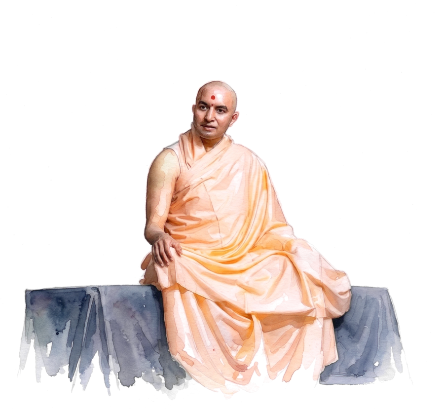

Divine Autumn
A Journey into Grace and Stillness
- Event: 7 October — 25 October
- Available for booking
Tucked into the quiet folds of the Shivalik hills, Sri Badrika Ashram is a sacred space to pause, turn inward and experience the living traditions of Sanatana Dharma. Here, devotion is woven into the everyday rhythm of prayer, silence, study and seva.


The consecrated idol of Śrī Hari is ceremoniously worshipped with Abhishekam — a holy bathing ritual accompanied by the transcendent chanting of the Vishnu Sahasranama or Lalita Sahasranama. On auspicious days, seekers gather to invoke and revere the awakened Divine Energies within.

The consecrated idol of Śrī Hari is ceremoniously worshipped with Abhishekam — a holy bathing ritual accompanied by the transcendent chanting of the Vishnu Sahasranama or Lalita Sahasranama. On auspicious days, seekers gather to invoke and revere the awakened Divine Energies within.
A Journey into Grace and Stillness
A three-day journey to nurture young minds
The Return of Rudra (English)


Whenever I visit the website of any spiritual organization, I get to read enchanting biographies of their founder or guru. The man or the guru is portrayed as nothing short of a superman. Well, I’m not one of them. I have no desire to glorify myself in a third-person narrative.
I’m a simple sadhu in a complex world. I don’t conform to the traditional code of being a sadhu or monk though. I remain non-traditional, independent and unchained. So, don’t be taken in by my robes or set your expectations based on what I wear. I dress in them because I like it that way. Just like some devote their life to music or painting, I devoted it to meditation and tantra.